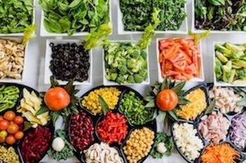

- 1 tbsp olive oil
- 1 onion finely chopped
- 2 garlic cloves, crushed
- 120g chorizo, diced
- 2 x 400g cans chopped tomatoes
- 1 tsp caster sugar
- 600g fresh gnocchi
- 125g mozzarella ball, cut into chunks
- small bunch of basil, torn
- green salad, to serve
- Heat the oil in a medium pan over a medium heat.
- Fry the onion and garlic for 8-10 mins until soft.
- Add the chorizo and fry for 5 mins more.
- Tip in the tomatoes and sugar, and season.
- Bring to a simmer, then add the gnocchi and cook for 8 mins, stirring often, until soft.
- Heat the grill to high.